Урок 1. Первые шаги в нейросети Kimi
1. Начало
Шаг 1. Ас-саляму алейкум, дорогие коллеги
Ас-саляму алейкум, дорогие коллеги. Сегодня первый урок блока «ИИ для преподавателя таджвида». Без сложной теории — только то, что понадобится в работе уже завтра.
Мы разберёмся, из чего состоит экран нейросети Kimi и какие кнопки нужны учителю. Расскажем Kimi о себе, чтобы он отвечал под нашу работу. Узнаем, где он хранит знания о нас и как этим управлять. И создадим рабочее место — проект — для дипломного курса.
Урок построен так: объяснение на настоящих экранах Kimi, показ на примере, четыре практических задания, приём на закрепление, домашнее задание и рефлексия.
Шаг 2. Цели урока
Цели урока. После урока вы сможете:
- Найти на экране Kimi главные кнопки и понять, для чего каждая.
- Рассказать Kimi о себе так, чтобы ответы подходили вашей работе.
- Различать настройки сеанса, память и проект — и понимать, что куда записывать.
- Создать рабочее место для своего дипломного курса.
Шаг 3. План урока
План урока из пяти шагов. Сначала проверим готовность: правильный сайт и вход в аккаунт. Потом разберём экран и кнопки. Затем — память и рабочее место. После этого четыре практических задания. И в конце закрепление: приём, термины, домашнее задание и рефлексия.
2. Вход в Kimi
Шаг 4. Куда заходить: правильный адрес Kimi
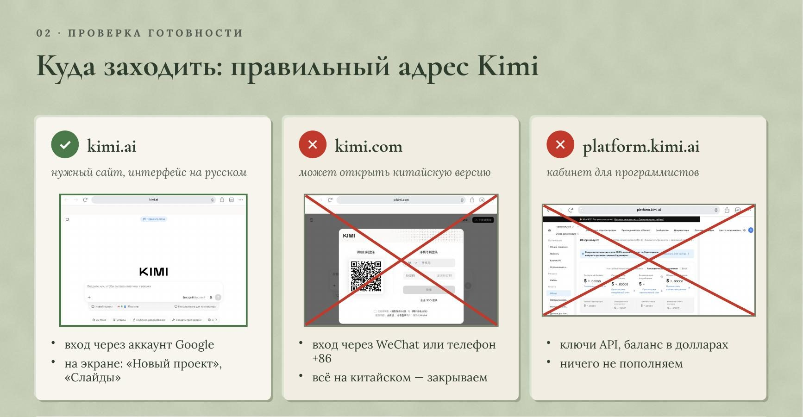
Сначала самое важное — куда заходить. Нам нужен сайт kimi.ai. Он открывается сразу на русском, вход — через аккаунт Google. На главном экране вы увидите «Новый проект» и «Слайды».
Два адреса, куда мы не заходим. Первый — kimi.com: он может открыть китайскую версию, где вход только через WeChat или китайский номер телефона +86. Такое окно просто закрываем. Второй — platform.kimi.ai: это кабинет для программистов, там ключи API, баланс в долларах и кнопка «Пополнить счёт». Сюда не заходим и ничего не пополняем.
Шаг 5. Как зайти на kimi.ai: через Google и через Яндекс
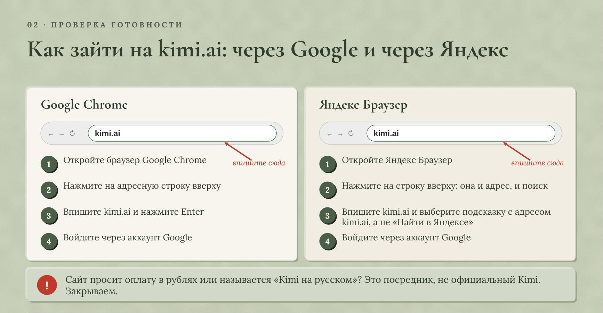
Главное правило: адрес kimi.ai вписываем в адресную строку браузера, а не ищем через поиск. В поиске много сайтов-посредников.
Если у вас Google Chrome: открываем браузер, нажимаем на адресную строку вверху, вписываем kimi.ai и нажимаем Enter. Входим через аккаунт Google.
Если у вас Яндекс Браузер: открываем его и нажимаем на строку вверху — в Яндексе это и адрес, и поиск одновременно. Вписываем kimi.ai и выбираем подсказку с адресом kimi.ai, а не «Найти в Яндексе». Входим через аккаунт Google.
Внимание: если сайт просит оплату в рублях или называется «Kimi на русском» — это посредник, а не официальный Kimi. Закрываем.
Шаг 6. Яндекс: куда вписывать адрес
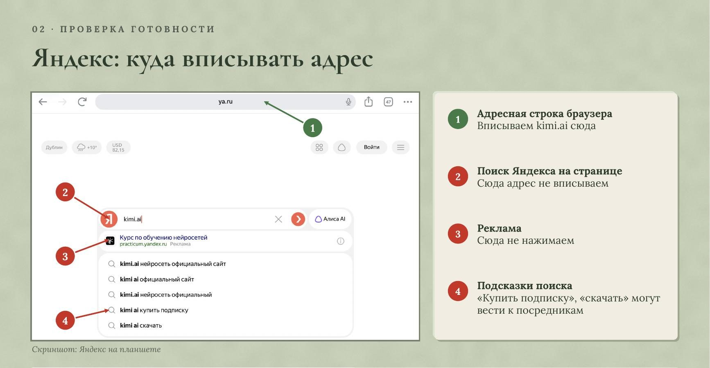
Частая ошибка — вписать kimi.ai в поиск на странице Яндекса. Посмотрите на скрин.
Зелёная метка 1 — верхняя адресная строка браузера. Адрес вписываем сюда.
Красная метка 2 — поиск Яндекса на самой странице. Сюда адрес не вписываем.
Красная метка 3 — реклама. Сюда не нажимаем.
Красная метка 4 — подсказки поиска вроде «купить подписку» или «скачать». Они могут вести к посредникам.
Шаг 7. Что выбрать: два способа зайти на kimi.ai
Подсказки под строкой поиска Яндекса — это поисковые запросы, а не сам сайт. Поэтому из списка лучше ничего не выбирать.
Самый надёжный способ. Первое: нажимаем на верхнюю строку браузера, где сейчас написано ya.ru. Второе: стираем ya.ru и вписываем kimi.ai. Третье: нажимаем «Перейти» на клавиатуре. Сразу откроется Kimi, без поиска.
Если всё же ищете через Яндекс. Первое: нажимаем первую подсказку «kimi.ai нейросеть официальный сайт» или оранжевую стрелку. Второе: в результатах смотрим не на заголовок, а на адрес под ним — нужен ровно kimi.ai. Третье: пропускаем результаты с пометкой «Реклама» и похожие адреса — с буквами «ru», с дефисами, со словами «на русском».
Шаг 8. Результаты поиска: какую ссылку нажать
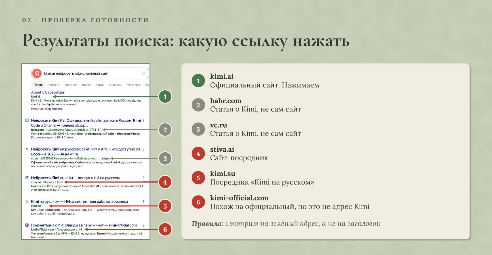
Вот результаты поиска. Нажимаем только ту ссылку, у которой под заголовком зелёный адрес kimi.ai. Заголовок может быть на английском — это нормально.
- kimi.ai, официальный сайт. Нажимаем.
- habr.com, статья о Kimi, а не сам сайт.
- vc.ru, тоже статья.
- stiva.ai, сайт-посредник.
- kimi.su, посредник «Kimi на русском».
- kimi-official.com. Похож на официальный, но это не адрес Kimi.
Правило: смотрим на зелёный адрес, а не на заголовок.
Шаг 9. Правило для любого браузера
Это правило одинаковое для Google Chrome, Яндекс Браузера, Safari и любого другого браузера.
Первое: вписываем адрес kimi.ai в верхнюю адресную строку и нажимаем «Перейти».
Второе: если ищем через поиск — смотрим не на заголовок, а на адрес под ним, и переходим только по ссылке с адресом kimi.ai.
Третье: после перехода проверяем адресную строку — там должно быть kimi.ai. Другой адрес — закрываем вкладку.
Главное: название сайта может быть любым, а адрес у официального Kimi один — kimi.ai.
Шаг 10. Если Kimi открылся на китайском
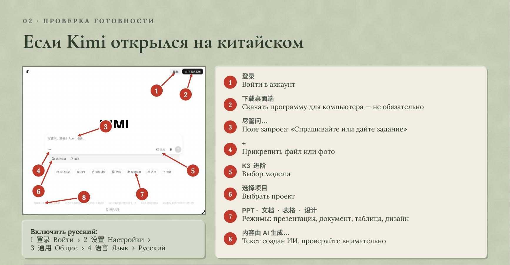
Запасной шаг. Если Kimi вдруг открылся на китайском — вот перевод кнопок.
- «Войти».
- скачать программу для компьютера, не обязательно.
- поле запроса.
- «плюс», прикрепить файл.
- выбор модели.
- выбрать проект.
- режимы: презентация, документ, таблица, дизайн.
- надпись «текст создан ИИ, проверяйте внимательно».
Чтобы включить русский: «Войти», потом «Настройки», потом «Общие», потом «Язык» и выбираем «Русский».
А если окно входа просит WeChat или номер +86 — это китайская версия. Закрываем и переходим на kimi.ai.
3. Экран и кнопки
Шаг 11. Нейросеть — помощник, а не источник
Главная мысль урока. Нейросеть умеет объяснять тему простым языком, предлагать структуру урока и задания, составлять таблицы, тесты и вопросы, переписывать текст под возраст ученицы, готовить черновик презентации.
Но она не умеет гарантировать точность — она ошибается уверенным тоном. Она не источник текста Корана и арабского текста. Она не знает вашу методику, пока вы её не опишете. И она не отвечает за материал — автор вы.
Нейросеть готовит черновик. Автор материала — вы, и каждое слово вы проверяете сами.
Шаг 12. Главный экран Kimi
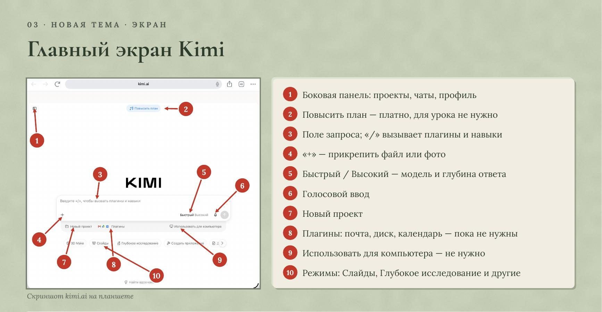
Это главный экран Kimi. Пройдём по номерам.
- боковая панель: проекты, чаты, профиль.
- «Повысить план», это платно, для урока не нужно.
- поле запроса. Если ввести знак «/», появятся плагины и навыки.
- «плюс», прикрепить файл или фото.
- «Быстрый / Высокий»: модель и глубина ответа. Разберём на следующем шаге.
- микрофон, голосовой ввод.
- «Новый проект».
- «Плагины»: почта, диск, календарь. Пока не нужны.
- «Использовать для компьютера». Не нужно.
- режимы: «Слайды», «Глубокое исследование» и другие.
Шаг 13. Выбор модели и глубины ответа
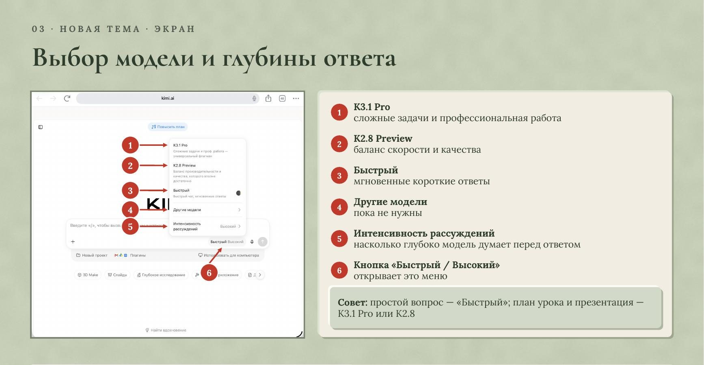
Справа в поле ввода есть кнопка «Быстрый / Высокий». Нажимаем на неё — откроется меню.
Первое слово, «Быстрый», — это модель, которая сейчас выбрана. Второе, «Высокий», — интенсивность рассуждений: насколько глубоко Kimi думает перед ответом.
В меню три модели. K3.1 Pro — для сложных задач и профессиональной работы. K2.8 Preview — баланс скорости и качества. «Быстрый» — мгновенные короткие ответы. Пункт «Другие модели» нам пока не нужен.
Для простого вопроса выбираем «Быстрый». Для плана урока и презентации — K3.1 Pro или K2.8. Если при выборе модели Kimi просит оплату, возвращаемся на K2.8.
Шаг 14. Открываем боковую панель
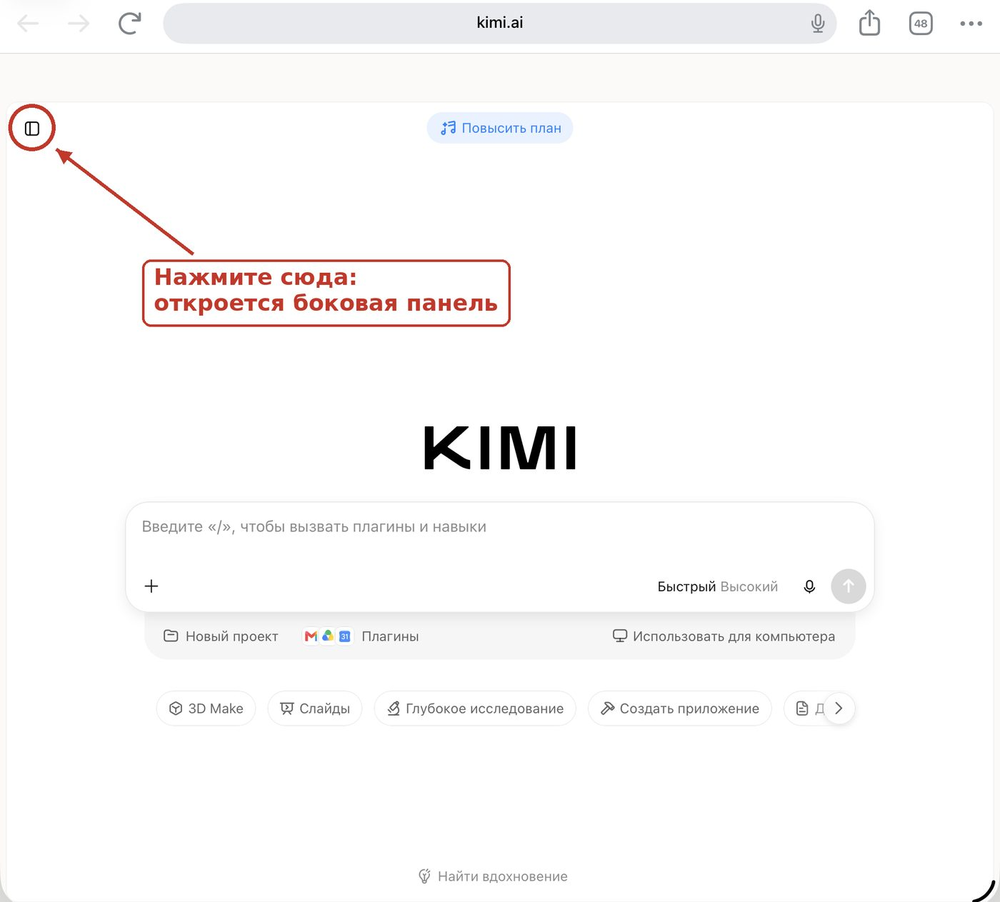
Посмотрите в левый верхний угол экрана Kimi. Там маленький значок — квадрат с полоской слева. Нажимаем на него, и слева откроется боковая панель. В ней собрано всё, что нам нужно для работы.
Шаг 15. Боковая панель Kimi
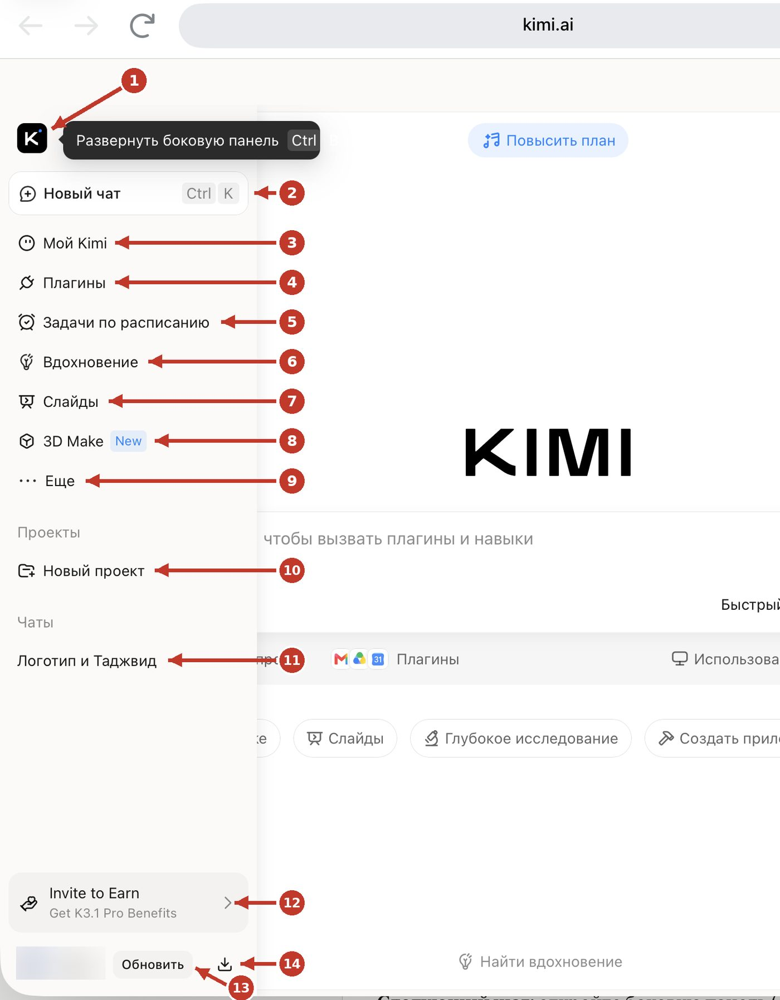
Пройдём по боковой панели сверху вниз.
- значок Kimi с буквой K. Если нажать, панель закрепится на экране.
- «Новый чат». Каждую новую задачу начинаем отсюда: одна задача — один чат.
- «Мой Kimi».
- «Плагины»: подключение почты, диска, календаря. На этом уроке не нужны.
- «Задачи по расписанию»: Kimi может выполнять задание в назначенное время. Пока не нужно.
- «Вдохновение»: примеры запросов. Можно посмотреть для идей.
- «Слайды»: создание презентаций. Подробно — в уроке по дизайну.
- «3D Make». Нам не нужно.
- «Ещё»: дополнительные режимы.
- «Проекты» и «Новый проект». Здесь создаём рабочее место для дипломного курса.
- «Чаты», история переписок.
- «Invite to Earn», приглашение за бонусы. Не нажимаем.
- «Обновить», переход на платный тариф.
- стрелка вниз: скачать приложение. Не обязательно.
Внизу слева — ваше фото и имя. Это профиль.
Шаг 16. Меню «Ещё»
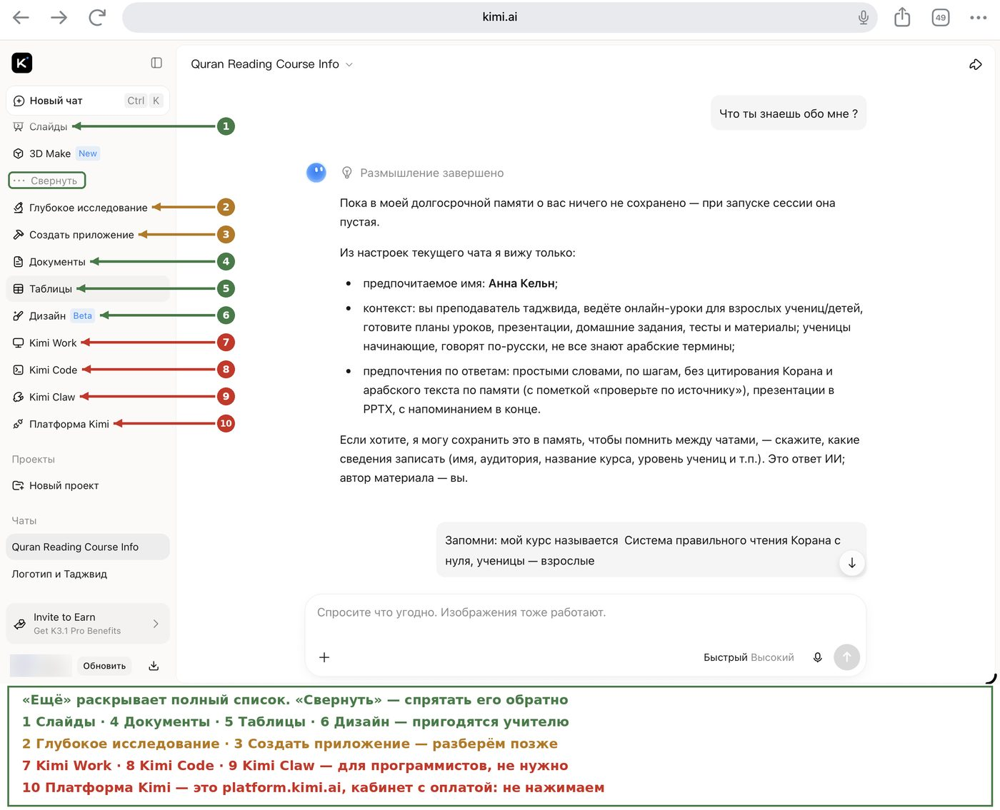
Пункт «Ещё» раскрывает полный список. Чтобы спрятать его обратно, нажимаем «Свернуть».
Пригодятся учителю: «Слайды» — презентации, «Документы» — тексты, планы, пособия, «Таблицы» — трекеры и расписания, «Дизайн» с пометкой Beta — оформление.
Разберём позже: «Глубокое исследование» и «Создать приложение».
Не нужно: «Kimi Work», «Kimi Code», «Kimi Claw» — это для программистов. И «Платформа Kimi» — это тот самый platform.kimi.ai, кабинет с оплатой в долларах. Не нажимаем.
Шаг 17. Меню профиля
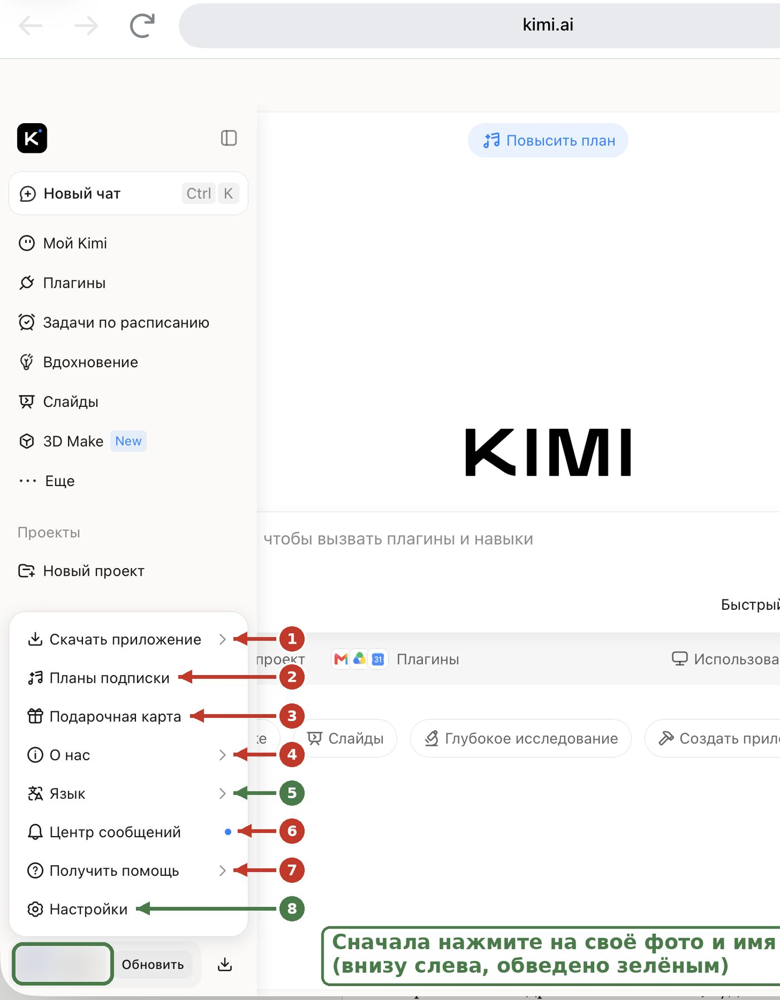
Нажимаем на своё фото и имя внизу боковой панели. Над ними откроется меню.
- «Скачать приложение». Не обязательно, работаем на сайте.
- «Планы подписки», платные тарифы. Для работы над дипломом нам понадобится платный тариф — об этом в конце урока.
- «Подарочная карта». Не нужно.
- «О нас». Не нужно.
- «Язык». Если Kimi открылся на английском или китайском, выбираем здесь «Русский».
- «Центр сообщений», уведомления.
- «Получить помощь», если что-то не работает.
- «Настройки». Самый важный пункт: здесь мы рассказываем Kimi о себе.
4. Рассказываем о себе
Шаг 18. Настройки Kimi
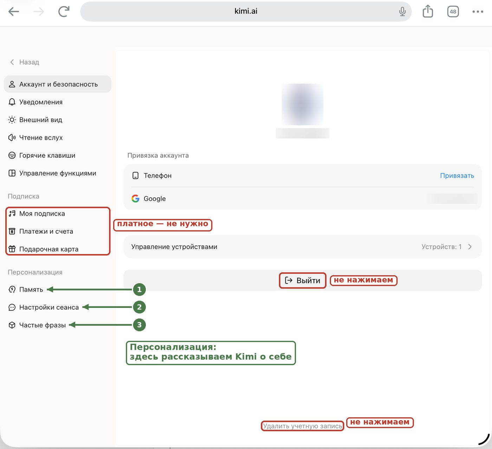
Мы в настройках. Слева меню, справа раздел «Аккаунт и безопасность»: видно, что вход выполнен через Google.
Внизу левого меню — раздел «Персонализация». Здесь мы рассказываем Kimi о себе. В нём три пункта: 1 — «Память», 2 — «Настройки сеанса», 3 — «Частые фразы».
Чего не нажимаем: «Моя подписка», «Платежи и счета», «Подарочная карта» — это платное. «Выйти» — выход из аккаунта. И «Удалить учётную запись» внизу мелким шрифтом — это удаление аккаунта, никогда не нажимаем.
Шаг 19. Три места, где Kimi хранит знания о вас
Главная схема урока. В Kimi три места, где хранятся знания о вас.
Первое — «Настройки сеанса». Это постоянный текст о себе и о том, как отвечать. Пишете вы сами, один раз, и он действует во всех чатах.
Второе — «Память». Это то, что Kimi запомнил из разговоров. Она пополняется сама или по просьбе «Запомни…». Действует во всех чатах, пока не удалите.
Третье — «Проект». Это папка для одного курса: чаты, файлы и свои инструкции. Действует только внутри проекта.
- Настройки сеанса: Кто вы и как отвечать Кто заполняет: Пишете сами, один раз Где действует: Во всех чатах Что Kimi запомнил из разговоров Кто заполняет: Сама или по просьбе «Запомни…» Где действует: Во всех чатах, пока не удалите Папка курса: чаты, файлы, инструкции Кто заполняет: Создаёте под одну задачу Где действует: Только внутри проекта
Шаг 20. Настройки сеанса
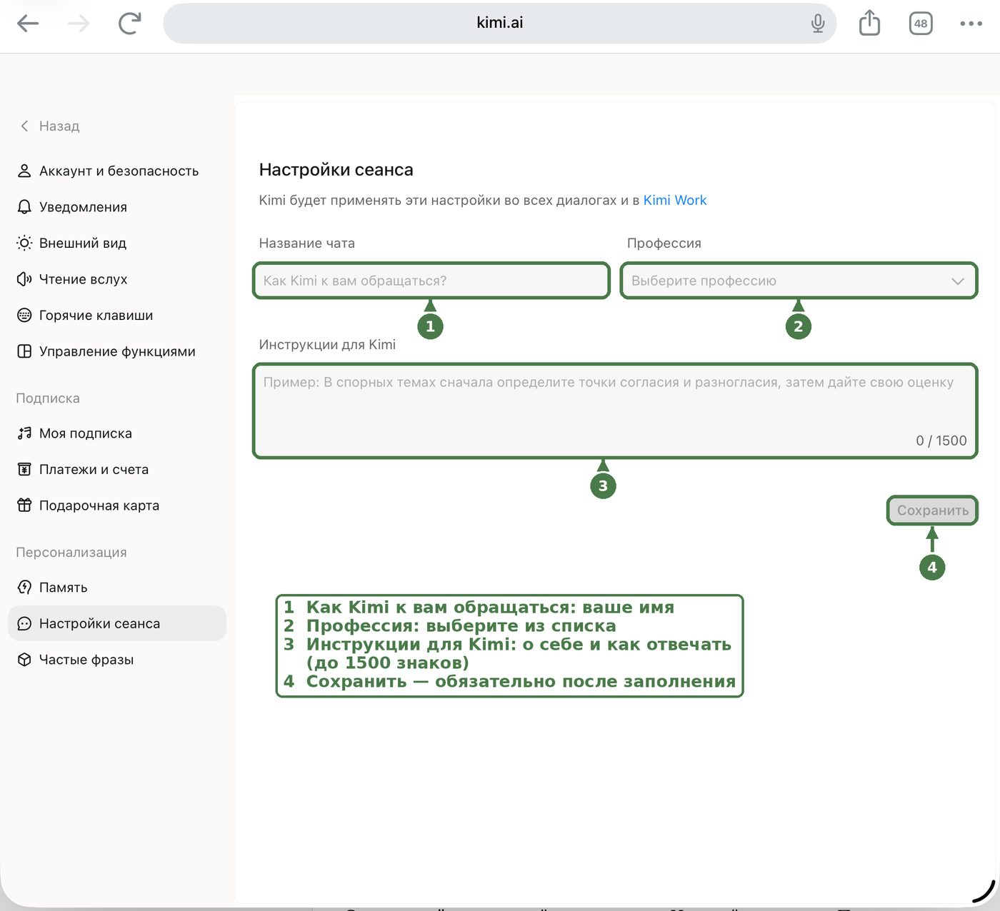
В разделе «Персонализация» открываем «Настройки сеанса». Вверху написано: Kimi будет применять эти настройки во всех диалогах. Значит, пишем один раз — и Kimi помнит это в каждом новом чате.
- поле «Как Kimi к вам обращаться?». Пишем имя и фамилию.
- «Профессия». Нажимаем на стрелку и выбираем «Учёба и подготовка к экзаменам».
- «Инструкции для Kimi», до 1500 знаков. Главное поле: о себе и как Kimi должен отвечать. Образец — на следующем шаге.
- «Сохранить». Обязательно нажимаем после заполнения.
Шаг 21. Образец для поля «Инструкции для Kimi»
Вот образец текста для поля «Инструкции для Kimi». Копируем его и заменяем всё, что в квадратных скобках, своими данными. Скобки в тексте не оставляем: что напишем в настройках, то Kimi и повторит.
Я преподаватель таджвида. Веду онлайн-уроки для [взрослых учениц / детей]. Мой курс: [название]. Ученицы начинающие, говорят по-русски, арабские термины знают не все. Я готовлю планы уроков, презентации, домашние задания, тесты и материалы для учениц.
Как отвечать:
— на русском языке, простыми словами, по шагам;
— текст Корана и арабский текст не пиши по памяти, пиши: «проверьте по источнику»;
— если не уверен, так и скажи, не придумывай;
— презентации делай в формате PPTX;
— в конце каждого ответа напоминай: это ответ ИИ, автор материала — я, я проверю каждое слово.
Шаг 22. Образец заполнения
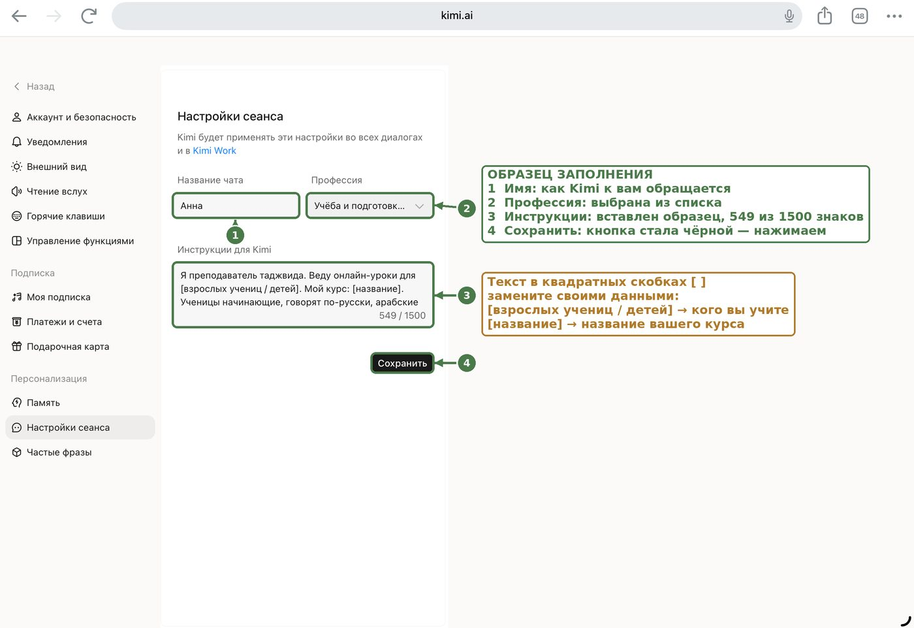
Вот как выглядят заполненные настройки.
- имя: так Kimi будет к нам обращаться.
- профессия выбрана из списка.
- в инструкции вставлен образец. Внизу счётчик: 549 знаков из 1500, место ещё есть.
- «Сохранить». Пока поля пустые, кнопка серая. После заполнения она стала чёрной — нажимаем.
Текст в квадратных скобках заменяем своими данными: кого вы учите и как называется ваш курс.
Шаг 23. Проверяем, что настройки сохранились
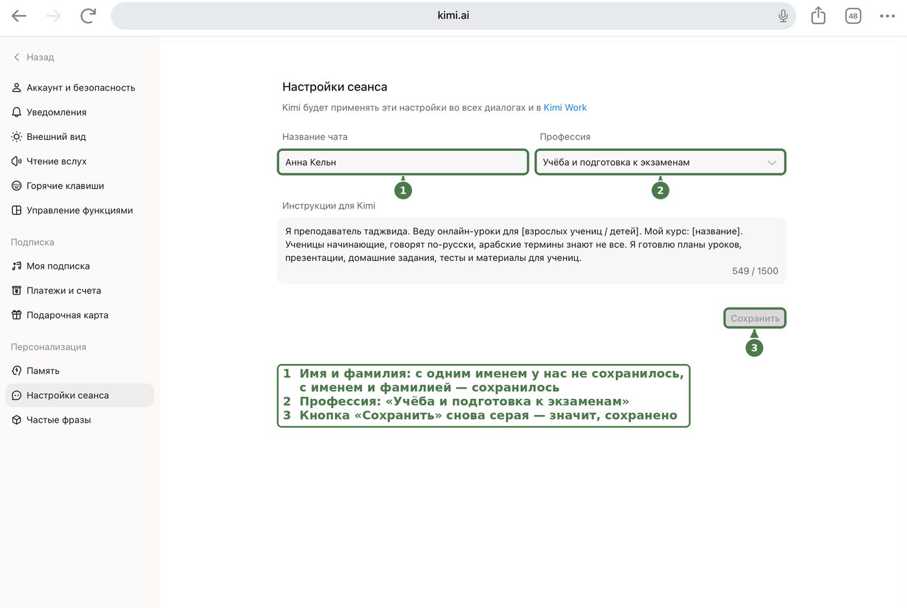
После нажатия «Сохранить» смотрим на кнопку. Если она снова серая — настройки сохранились.
Обратите внимание: когда мы написали только имя, настройки не сохранились. Когда добавили фамилию — сохранились. Поэтому в первом поле пишем имя и фамилию.
Шаг 24. Как вернуться из настроек в чат
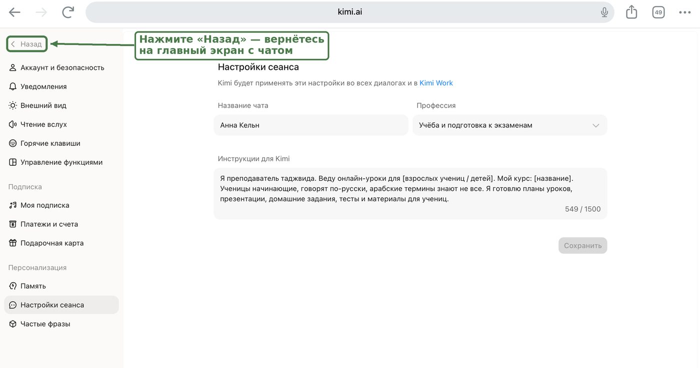
Из настроек в чат возвращаемся кнопкой «Назад» в левом верхнем углу. Откроется главный экран с полем ввода — здесь мы и пишем Kimi.
Шаг 25. Если открылась страница Kimi Work
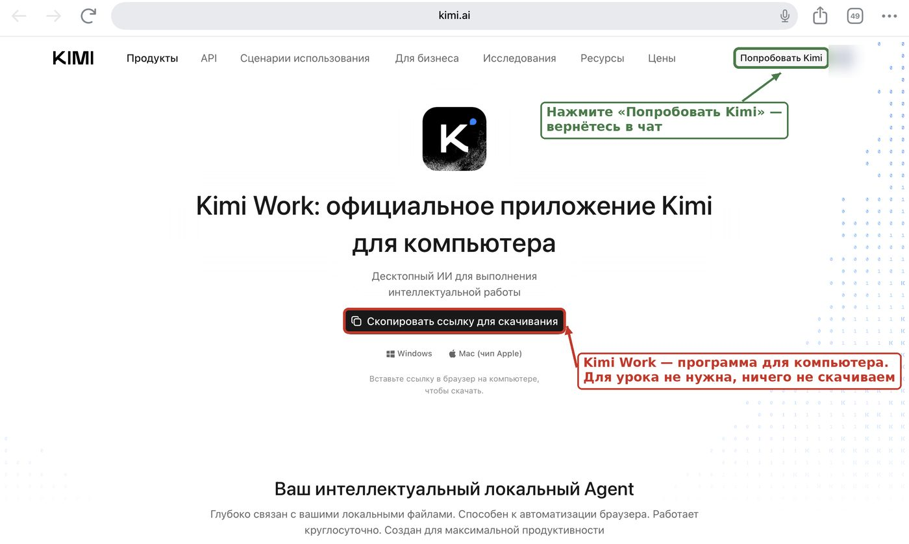
В настройках есть синяя ссылка «Kimi Work». Если нажать на неё, откроется страница программы для компьютера. Она нам не нужна, ничего не скачиваем, кнопку «Скопировать ссылку для скачивания» не нажимаем. Чтобы вернуться в чат, нажимаем «Попробовать Kimi» в правом верхнем углу.
Шаг 26. Проверка: «Что ты знаешь обо мне?»
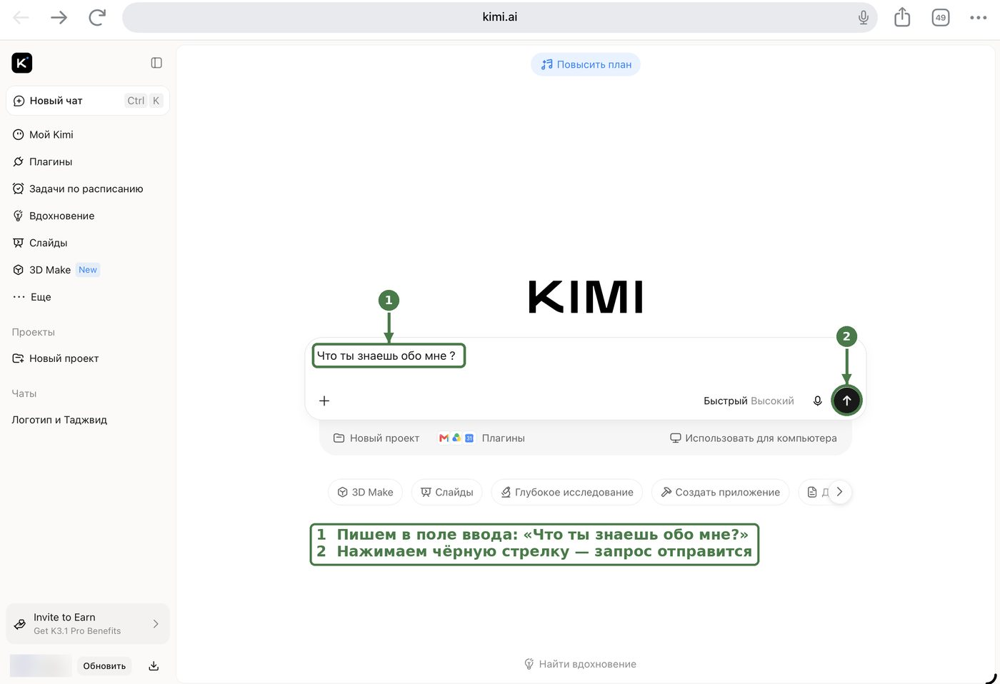
Проверяем, запомнил ли Kimi наши настройки. На главном экране в поле ввода пишем: «Что ты знаешь обо мне?» — и нажимаем чёрную стрелку справа. Пока стрелка не нажата, Kimi вопрос не получил.
Шаг 27. Читаем ответ Kimi
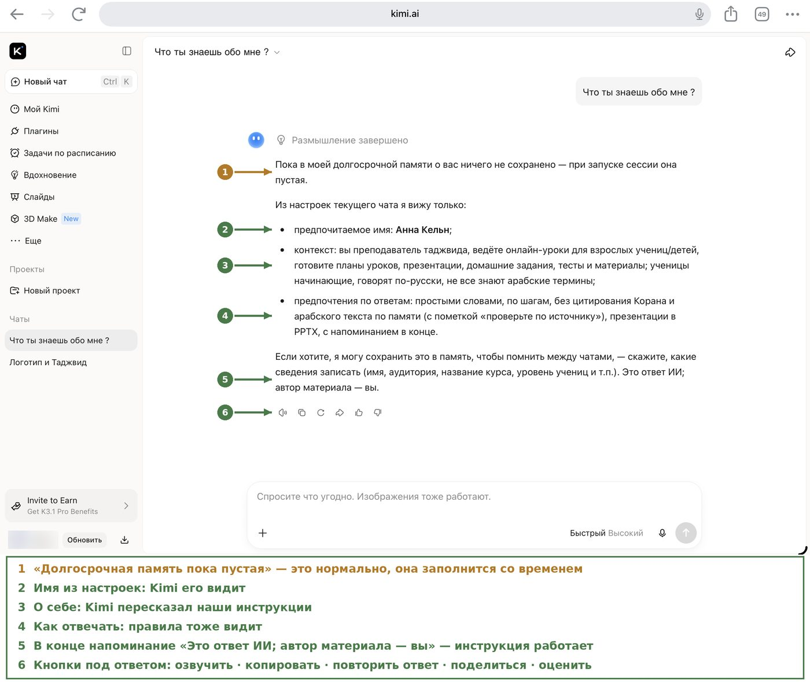
Kimi ответил. Разберём по частям.
- «Долгосрочная память пока пустая». Это нормально: мы только начали. Память заполнится сама или по просьбе «Запомни…».
- имя: Kimi называет нас так, как мы написали в настройках.
- о себе: Kimi пересказал наши инструкции.
- как отвечать: правила он тоже видит.
- напоминание в конце: «Это ответ ИИ; автор материала — вы». Мы сами вписали это в инструкции — и Kimi выполнил.
- кнопки под ответом: озвучить, копировать, повторить ответ, поделиться, оценить.
Слева в истории появился новый чат — так сохраняется каждый разговор.
5. Память
Шаг 28. Просим Kimi запомнить
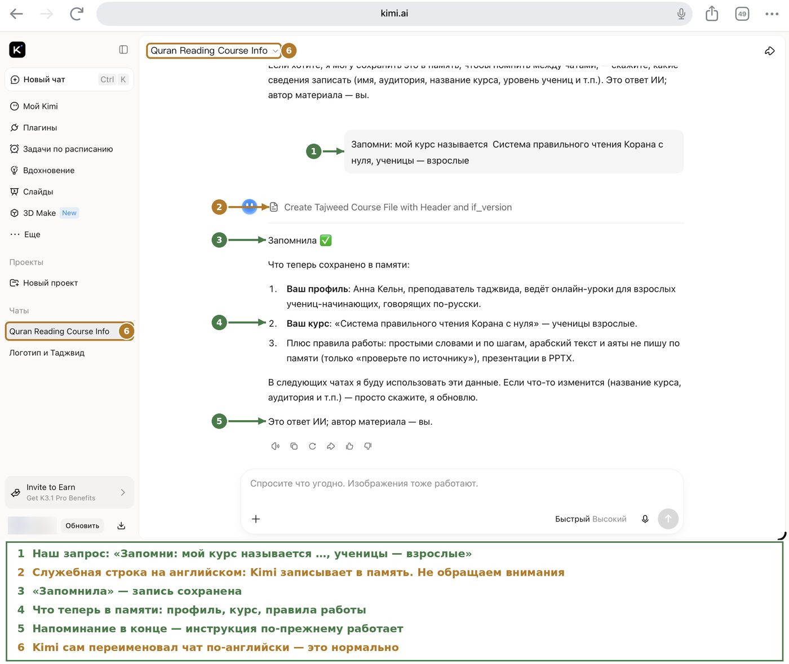
Kimi может запомнить важное, если попросить прямо. Пишем в чат: «Запомни: мой курс называется …, ученицы — взрослые» — и отправляем.
- наш запрос начинается со слова «Запомни». Это главное слово.
- строка на английском со значком документа. Это служебная запись: Kimi сохраняет данные. Не обращаем внимания.
- «Запомнила»: запись сохранена.
- Kimi сам перечисляет, что теперь в памяти. Проверяем, всё ли верно.
- напоминание в конце на месте, инструкция работает.
- Kimi сам назвал чат по-английски. Это нормально.
Если что-то изменится, пишем: «Обнови: …».
Шаг 29. Проверяем, что Kimi запомнил
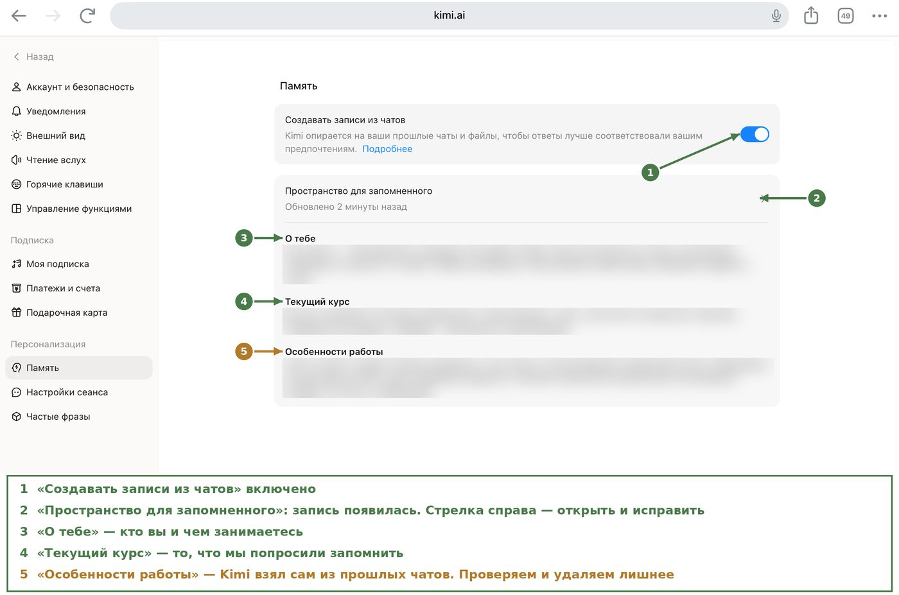
Снова открываем «Настройки», раздел «Память».
- «Создавать записи из чатов». Переключатель включён: Kimi сам запоминает важное.
- «Пространство для запомненного». Здесь лежит то, что Kimi о нас знает. Стрелка справа открывает записи: их можно исправить или удалить.
- «О тебе»: кто мы и чем занимаемся.
- «Текущий курс»: то, что мы попросили запомнить.
- «Особенности работы». Этот раздел Kimi составил сам, по нашим прошлым чатам. Поэтому память нужно регулярно проверять и удалять лишнее. «Импорт» — перенос памяти из другой нейросети, пока не нужен.
Шаг 30. Частые фразы — банк запросов

Открываем «Частые фразы». Внутри раздел называется «Шаблоны». Это готовые запросы, которые не нужно печатать каждый раз, — ваш банк промтов.
- «Добавить шаблон».
- «Слово вызова» — короткое имя шаблона.
- «Содержимое» — сам текст запроса.
Например, слово вызова «план», содержимое: «Составь план урока по теме … для …: повторение, переход, новая тема, практика, домашнее задание, рефлексия».
6. Проект курса
Шаг 31. Создаём проект
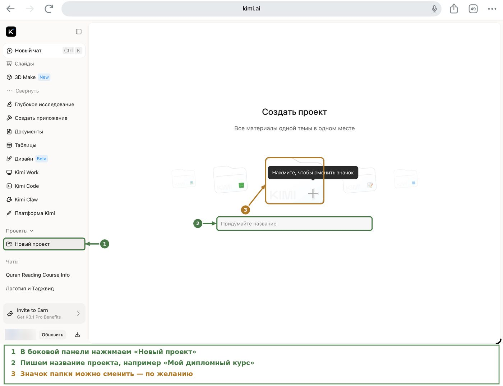
Проект — это папка для одного курса. На экране так и написано: «Все материалы одной темы в одном месте».
- в боковой панели, под заголовком «Проекты», нажимаем «Новый проект».
- в поле «Придумайте название» пишем название по шаблону.
- значок папки можно сменить. Это по желанию.
Шаг 32. Нажимаем «Создать»
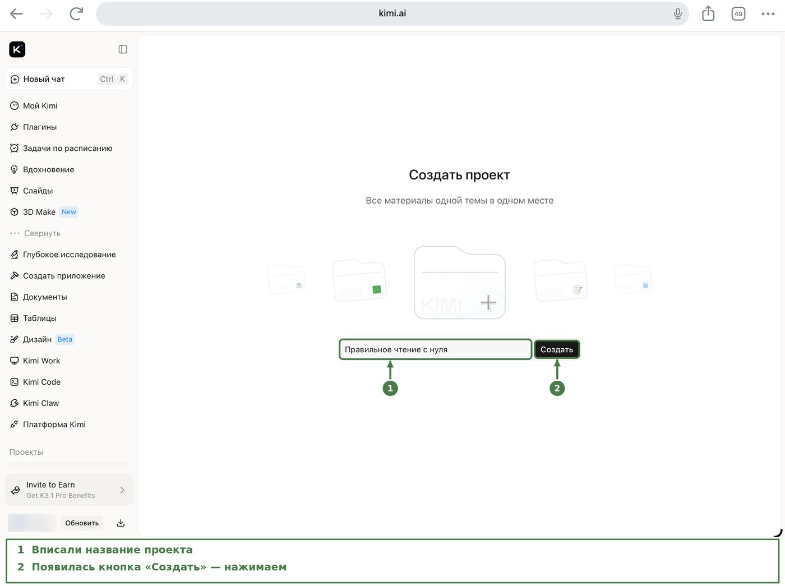
Вписали название. Справа появилась чёрная кнопка «Создать» — нажимаем. Проект откроется сам.
Шаг 33. Страница проекта
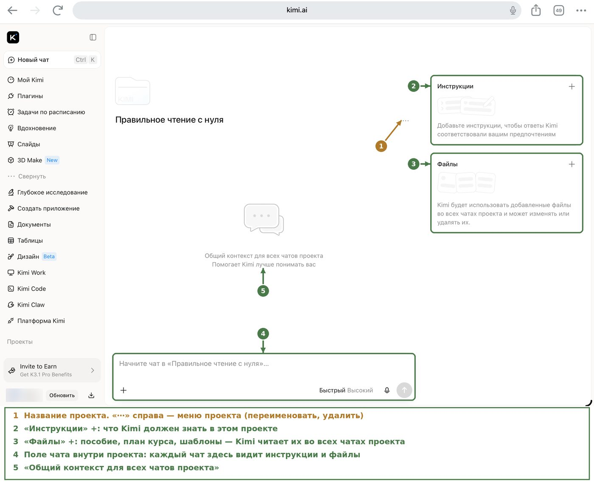
Открылась страница проекта. Посередине написано: «Общий контекст для всех чатов проекта». Всё, что мы положим в проект, Kimi будет учитывать в каждом его чате.
- название проекта. Три точки справа — меню проекта.
- «Инструкции» с плюсом: что Kimi должен знать в этом проекте.
- «Файлы» с плюсом: пособие, план курса, шаблоны.
- поле чата внутри проекта: каждый чат здесь видит инструкции и файлы.
- «Общий контекст для всех чатов проекта».
Шаг 34. Добавляем инструкции проекта

У карточки «Инструкции» нажимаем «плюс».
Это мой дипломный курс «[название]» для [взрослых учениц / детей] с нуля. Курс проходит онлайн, в группе до 5 учениц.
Опирайся на файлы проекта: пособие и план курса. Если в файлах нет ответа — так и скажи.
Каждый урок строй по порядку: дуа, повторение, новая тема, практика, домашнее задание, рефлексия.
Арабский текст и аяты не пиши по памяти — пиши «проверьте по источнику».
Презентации — в формате PPTX.
Шаг 35. Окно «Инструкции»
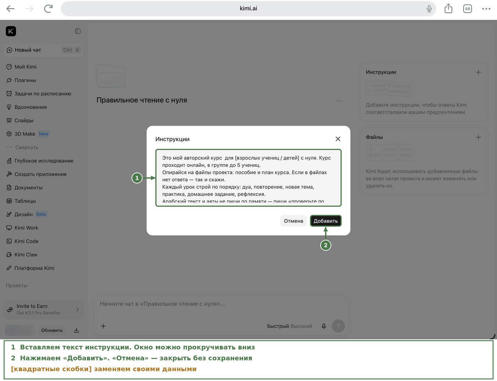
Открывается окно «Инструкции». Вставляем текст. Если он длинный, окно прокручивается вниз. Квадратные скобки заменяем своими данными. Нажимаем «Добавить». «Отмена» закрывает окно без сохранения.
Шаг 36. Инструкция сохранена

Начало инструкции видно в карточке. Вместо «плюса» появился карандаш: нажав на него, инструкцию можно открыть и исправить. Теперь каждый чат внутри проекта будет следовать этим инструкциям.
Дальше — «плюс» у «Файлов».
7. Файлы проекта
Шаг 37. Окно «Добавить файлы»
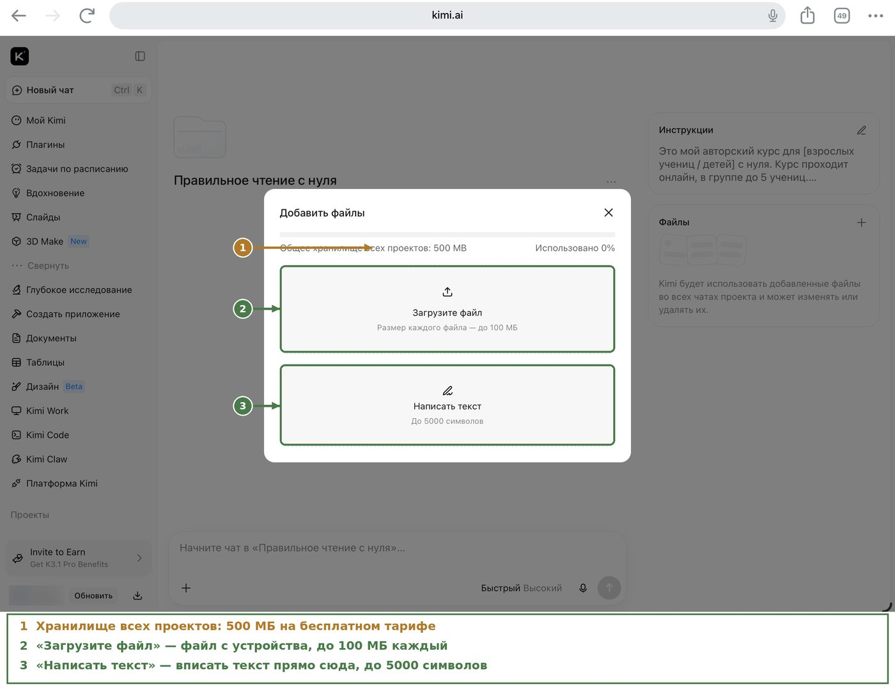
Нажимаем «плюс» у «Файлов». Открывается окно «Добавить файлы».
- вверху: «Общее хранилище всех проектов» и сколько уже использовано. Место общее для всех проектов, поэтому лишнее не загружаем.
- «Загрузите файл»: файл с устройства, каждый до 100 МБ.
- «Написать текст»: вписать текст прямо сюда, до 5000 символов.
Шаг 38. Откуда взять файл
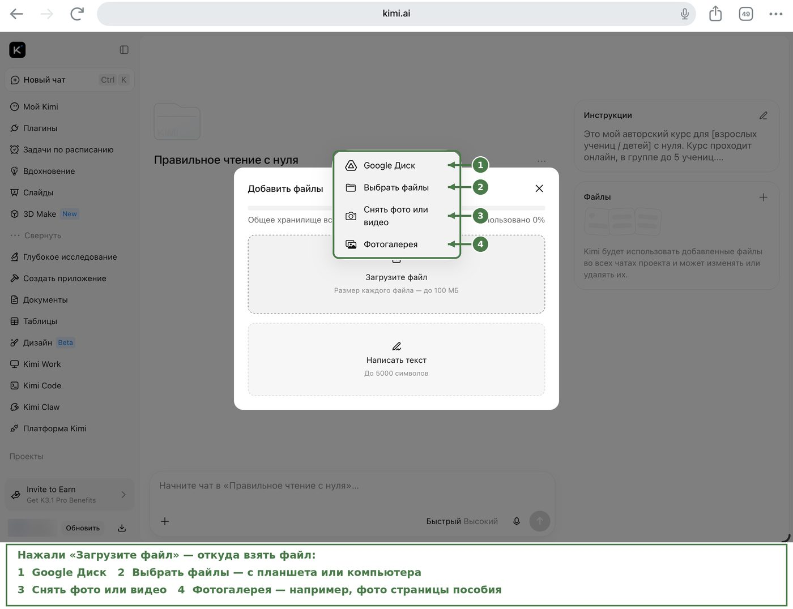
Нажимаем «Загрузите файл». Появляется меню.
- «Google Диск».
- «Выбрать файлы» с планшета или компьютера: план курса, пособие, шаблон.
- «Снять фото или видео».
- «Фотогалерея», например фото страницы пособия.
Помним: арабский текст на фото Kimi может прочитать с ошибками. Каждое слово проверяем по источнику.
Шаг 39. Написать текст
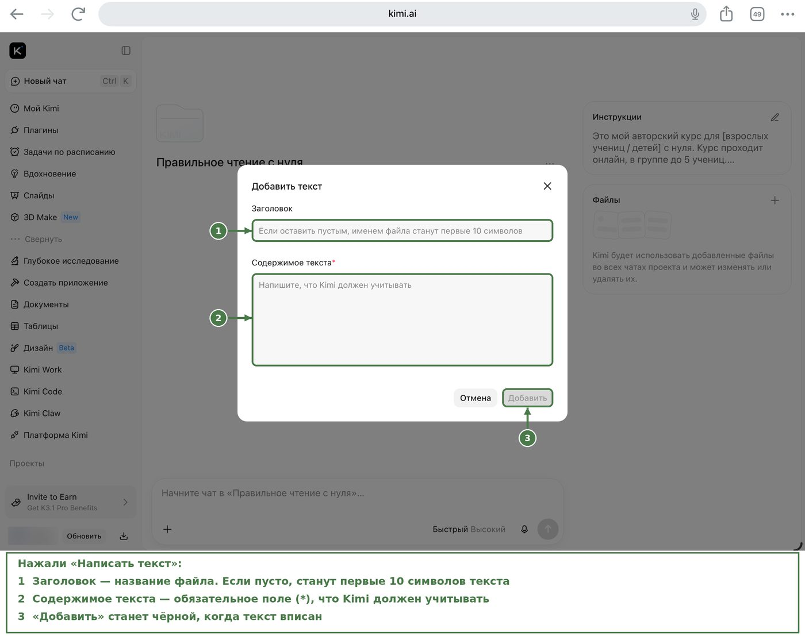
Если нажать «Написать текст», откроется окно «Добавить текст».
- «Заголовок», название файла. Если оставить пустым, названием станут первые 10 символов. Лучше написать понятное название, например «План курса».
- «Содержимое текста», обязательное поле со звёздочкой.
- «Добавить» становится чёрной, когда текст вписан. Нажимаем.
Шаг 40. Файл в проекте

После загрузки файл появляется в карточке «Файлы»: видно название и размер.
- файл загружен.
- «плюс», добавить ещё.
- «Файлы чатов проекта»: здесь собираются все файлы проекта и файлы, прикреплённые в его чатах.
Шаг 41. Проверяем, видит ли Kimi файл
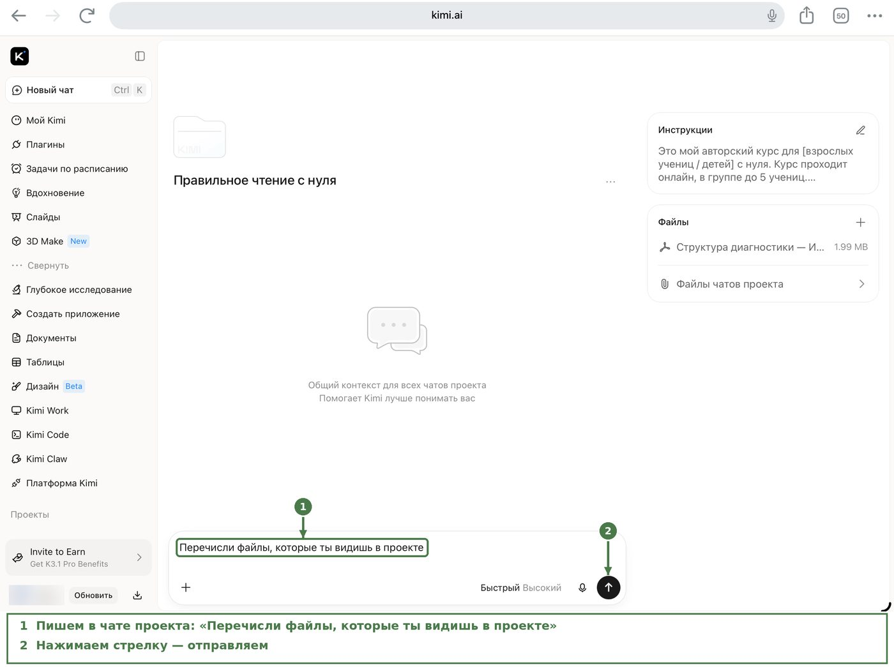
Теперь проверяем, что Kimi видит файл. В поле чата проекта пишем: «Перечисли файлы, которые ты видишь в проекте» — и нажимаем стрелку.
Шаг 42. Kimi не увидел файл
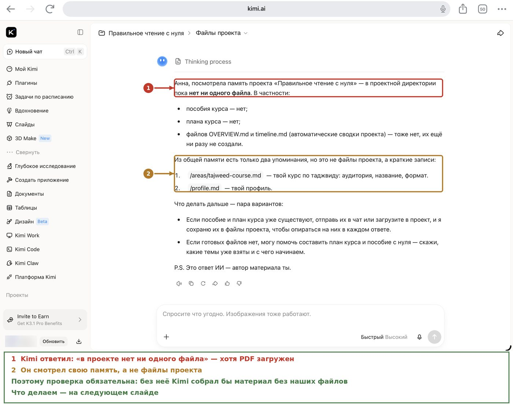
Kimi ответил: «в проекте нет ни одного файла» — хотя PDF загружен и виден в карточке. Он посмотрел свою память, а не файлы проекта.
Поэтому проверка обязательна: без неё Kimi собрал бы материал, не открыв наш файл.
Шаг 43. Где лежат файлы проекта
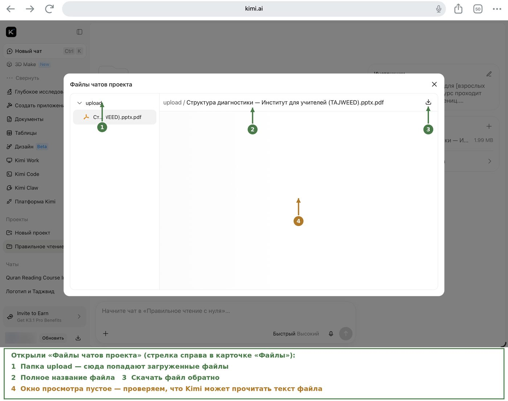
В карточке «Файлы» нажимаем стрелку у «Файлы чатов проекта». Откроется окно.
- папка upload: сюда попадают загруженные файлы.
- полное название файла.
- стрелка вниз справа: скачать файл обратно.
- окно просмотра.
Полное название пригодится нам на следующем шаге.
Шаг 44. Называем файл точно — Kimi его видит

Пишем в чат проекта: «Открой файл „…“ из файлов проекта (карточка „Файлы“ справа) и кратко перескажи, о чём он». Указываем точное название и где файл лежит.
И Kimi открыл файл и пересказал его по блокам. Обратите внимание: он сам предупредил, что аяты в файле вставлены картинками и текст надо сверять с Кораном. Напоминание в конце тоже на месте.
Открой файл «[точное название файла]» из файлов проекта (карточка «Файлы» справа) и кратко перескажи, о чём он.
Шаг 45. Правило: называем файл точно
Это обязательное правило работы с проектами. Kimi не всегда видит файлы проекта сам. Поэтому в каждом запросе на сборку пишем точное название файла и где он лежит: «в файлах проекта, карточка „Файлы“ справа».
Сборку начинаем только после того, как Kimi пересказал каждый нужный файл своими словами.
Если не получается: называем файл точно; не помогло — новый чат внутри проекта; не помогло — прикрепляем файл прямо в чат через «плюс». PDF, сохранённый из презентации, может оказаться картинками без текста — тогда загружаем сам PPTX.
Сборку начинаем только после того, как Kimi пересказал каждый нужный файл своими словами.
8. Проекты для диплома
Шаг 46. Проекты для диплома
Для работы над дипломом нужен платный тариф Kimi: на бесплатном можно создать только два проекта, а нам нужно восемь. Тариф оформляем через ваше фото внизу слева — «Планы подписки».
Создаём восемь проектов, по одному на каждый результат. DF_00 — общие материалы, архив. DF_01 — вводная презентация. DF_02 — первый содержательный урок. DF_03 — продолжающийся урок. DF_04 — завершающий урок и зачёт. DF_05 — защитная презентация. DF_06 — пояснительная записка. DF_07 — речь к защите.
Главное правило: один проект — один результат. В проект 02 не загружаем материалы 01, 03 и 04.
DF_00_Общие_материалы_архивDF_01_Вводная_презентацияDF_02_Первый_содержательный_урокDF_03_Продолжающийся_урокDF_04_Завершающий_урок_зачётDF_05_Защитная_презентацияDF_06_Пояснительная_запискаDF_07_Речь_к_защите
Шаг 47. Порядок работы в каждом проекте
Порядок для каждого проекта.
- Сайт kimi.ai, входим в аккаунт.
- В боковой панели, под «Проекты», нажимаем «Новый проект».
- Пишем название по шаблону, нажимаем «Создать».
- У карточки «Инструкции» — «плюс», вставляем скилл и правила этапа, «Добавить».
- У «Файлов» — «плюс», «Загрузите файл»: скелет, карта, источники, референс дизайна и скриншоты только этого этапа.
- Просим Kimi открыть каждый файл по точному названию и пересказать.
- Вставляем промпт сборки и просим сначала показать план.
- Проверяем план и только потом продолжаем сборку. Каждую версию сохраняем отдельно, с номером версии в названии файла.
Шаг 48. Правила безопасности учителя
Правила безопасности, они повторяются в каждом уроке блока.
Личные данные: ФИО, телефоны, оценки и фото учениц в нейросеть не вводим.
Текст Корана: аяты и арабский текст берём только из проверенного источника.
Проверка: каждое слово ответа проверяем сами, перед тем как дать ученицам.
Авторство: нейросеть делает черновик, автор материала — учитель.
Пароли и документы не отправляем никогда.
9. Практика
Шаг 49. Задание 1. Первый запрос и его правка
Задание 1. Нажмите «Новый чат». Вставьте запрос из рамки ниже и отправьте. Потом наведите на своё сообщение и нажмите карандаш. Замените «для взрослой ученицы» на «для ребёнка 8 лет» и отправьте. Сравните два ответа: что изменилось? Время — 3 минуты.
Объясни простыми словами, что такое махрадж. Для взрослой ученицы, которая только начала учить таджвид. 3 предложения.
Шаг 50. Задание 2. Расскажите Kimi о себе
Задание 2. Откройте фото внизу слева, «Настройки», «Настройки сеанса». Впишите имя и фамилию, выберите профессию, вставьте образец в «Инструкции для Kimi», замените скобки своими данными и нажмите «Сохранить». В новом чате спросите: «Что ты знаешь обо мне?» Время — 3 минуты.
Шаг 51. Задание 3. Проверьте память
Задание 3. Отправьте фразу «Запомни: мой дипломный курс называется …». Потом откройте «Настройки», «Память», «Пространство для запомненного» и найдите запись о курсе. Лишнее удалите. Время — 2 минуты.
Запомни: мой дипломный курс называется [название].
Шаг 52. Задание 4. Создайте проект и проверьте файл
Задание 4. Создайте проект DF_01_Вводная_презентация. Добавьте инструкцию проекта. Загрузите один файл, например план курса. В чате проекта попросите Kimi открыть этот файл по точному названию и пересказать его. Время — 3 минуты.
10. Закрепление
Шаг 53. Распределение по категориям
Приём на закрепление «Распределение по категориям». Прочитайте восемь карточек. Для каждой выберите, куда она относится: Н — настройки сеанса, П — память, Пр — проект, или «Никуда». Напишите в чат ответы цифрами и буквами, например «1-Н, 2-Никуда». Одну карточку объясните: почему именно туда? Подумать — одна минута, ответ — 30–40 секунд.
- Я преподаю таджвид взрослым
- Пароль от почты
- Файл пособия по курсу
- Сейчас мой курс — 30 уроков
- Отвечай по шагам
- Телефоны учениц
- Шаблон презентации
- Мы решили делать ДЗ с алгоритмом
Н — настройки сеанса · П — память · Пр — проект · Никуда
Показать ответы: 1-Н, 2-Никуда, 3-Пр, 4-П, 5-Н, 6-Никуда, 7-Пр, 8-П. Шаблон презентации можно положить и в настройки, если он один на все курсы.
Шаг 54. Термины урока
Термины урока, они попадут в пособие. Нейросеть — программа, которая отвечает текстом на ваш запрос. Запрос, или промт, — ваше сообщение с задачей. Чат — одна переписка на одну задачу. Настройки сеанса — постоянный текст о себе и о том, как отвечать. Память — то, что Kimi запомнил о вас. Проект — папка с чатами, файлами и инструкциями для одной задачи. Файлы проекта — материалы, на которые Kimi опирается в проекте. Шаблон — готовый запрос из «Частых фраз».
Шаг 55. Домашнее задание
Домашнее задание. Первое: доведите до конца «Настройки сеанса» — замените все скобки своими данными и проверьте вопросом «Что ты знаешь обо мне?». Второе: создайте проект DF_00_Общие_материалы_архив, загрузите программу курса и попросите Kimi пересказать файл по точному названию. Третье: отметьте в чек-листе по каждому заданию — «выполнено», «получилось» или «есть вопросы».
Шаг 56. Рефлексия
Рефлексия, ответы в чат одной фразой. Что сегодня было самым полезным для моей работы? Что пока непонятно в настройках? Для какой задачи курса я первым делом использую свой проект?
Шаг 57. Что дальше
Сегодня мы узнали экран и главные кнопки, рассказали Kimi о себе, проверили память и создали рабочее место для курса. В следующем уроке разберём, как ставить задачу нейросети: из чего состоит хороший запрос, как получить нужный формат ответа и как уточнять и исправлять ответ.
Джазакумуллаху хайран. Нейросеть — ваш помощник, автор курса — вы.
Rem · Разработка авторских методик · tajweedjazari4@cloud.com
 · tajweedjazari4@cloud.com
· tajweedjazari4@cloud.com